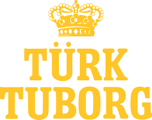
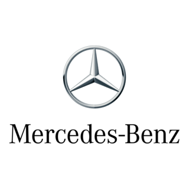
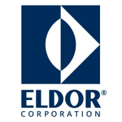
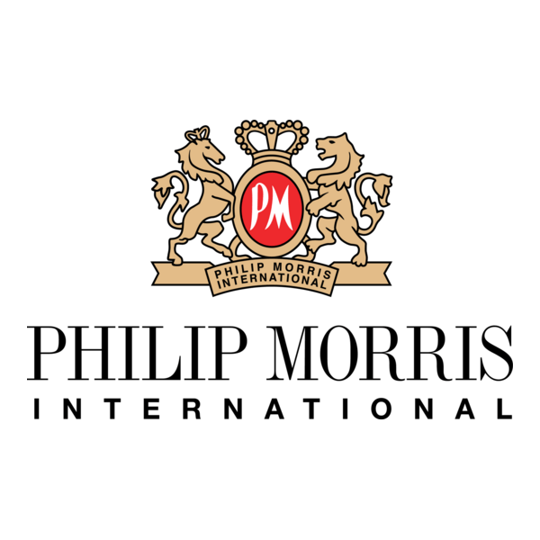
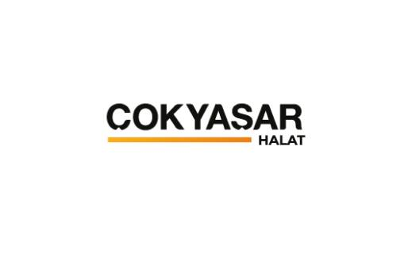
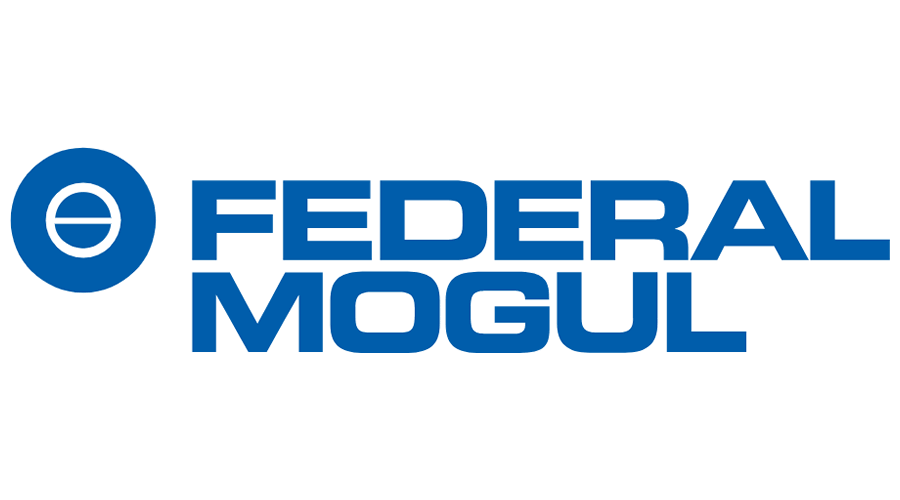
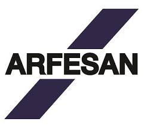
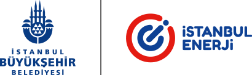
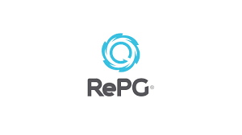

Endüstri 4.0 Yolculuğunda Bize Güvenen Liderler










Pilot tuzaklarına düşmeden, mühendislik DNA'sına sahip ekibimizle üretimde somut verimlilik (OEE) ve kârlılık artışı sağlayın. İşletmenizi verilerle yönetmeye bugünden başlayın.
Endüstri 4.0 Yolculuğunda Bize Güvenen Liderler









Yaklaşımımız
Sadece teknoloji kurmak yetmez. Gerçek dönüşüm için bütünsel bir strateji sunuyoruz.
Dijitalleşme yolculuğunda işletmelerin %70'i hedeflerine ulaşamıyor veya "pilot tuzağına" takılıp kalıyor. BrandIT olarak biz, teknolojiyi amaç değil araç olarak görüyoruz. Sürece doğrudan yazılım kurarak değil, Sotway platformumuz üzerinden bilimsel bir "Dijital Olgunluk Analizi" yaparak başlıyoruz.
İş modeli, teknoloji ve organizasyonu eşzamanlı dönüştüren "Üçlü Dönüşüm" yaklaşımımızla tesislerinize sadece bir altyapı değil, sürekli iyileştirme kültürü entegre ediyoruz.
Sotway ile veri odaklı analiz yapıyor, doğru yatırımı doğru zamanda yapmanız için stratejik yol haritası çiziyoruz.
ThingWorx, Kepware ve Cedrix gibi rüştünü ispatlamış global IIoT ve Yapay Zeka platformlarıyla kesintisiz IT/OT entegrasyonu sağlıyoruz.
Kültürel değişim ve yetenek gelişimiyle dönüşümün kalıcı olmasını, saha ekiplerinin bu vizyonu benimsemesini sağlıyoruz.
Kanıtlanmış Sonuçlar
Çözümlerimiz
Fabrikanızın gerçek kapasitesini görün. Anlık veri ile OEE'yi, darboğazları ve duruş nedenlerini şeffaf izleyin.
Detaylara Bak →Plansız duruşları tarihe gömün. Makine öğrenmesiyle arızaları olmadan önce tahmin edin.
Detaylara Bak →Tesis verilerinize Türkçe doğal dil ile sorun. Zero Egress, %100 KVKK/GDPR uyumlu AI teknolojisi.
Detaylara Bak →Harekete Geçin
Tesisinizin dijitalleşme potansiyelini keşfedin. Bilimsel metotlarla hazırlanan Sotway analizini tamamlayın ve size özel yol haritanızı hemen oluşturalım.
Analize Başla (Sotway'e Git)